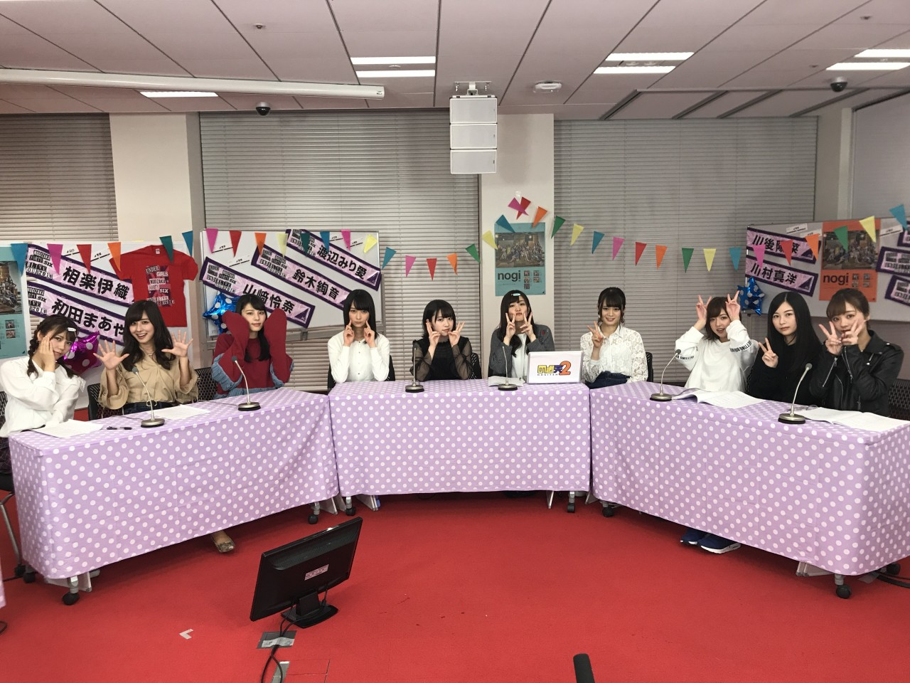
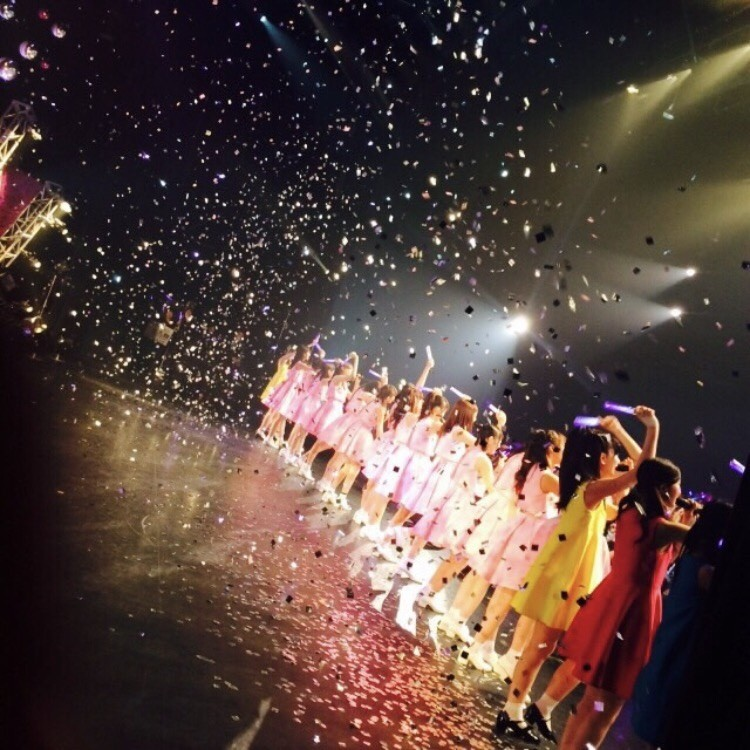
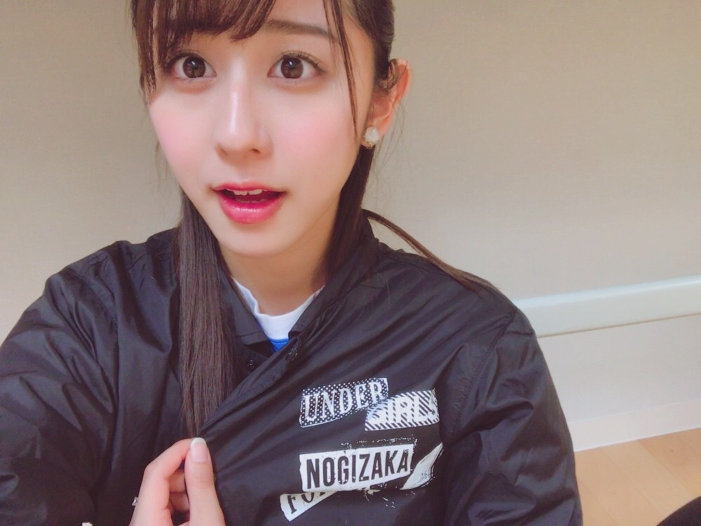

| 2017/04 08 Sat | 斎藤ちはる 振り返る |
ちはるーむへようこそ
今日のちはるーむでは、のぎ天2生配信をみんなで見ました。
今日は忠犬ハチ公の日。
ご主人様が亡くなっても尚待ち続けたという健気な忠犬ハチ公。
いつ聞いても胸が締め付けられます。
渋谷にある像は、実は２代目。
第二次世界大戦で供出されてしまったんだって...
ずっと大切に守っていきたいね
今日はのぎ天2、生配信でした！
#アンダーライブ決起集会
ということでしたが...
見てくださった方はいらっしゃいますか？

90分の予定が、
色々と盛り上がってしまい
約30分くらい延長してしまいましたね
すみませんでした(> <)
その影響で皆さんからのメールを
ご紹介させていただく機会もあまりなく
残念に思っています。
次回こそ...
そして内容としては、
今までのアンダーライブを振り返りつつ
その当時の裏側トークや思い出話を
話していくという内容がメインでした
振り返ってみると3年前から
アンダーライブというものが
始まったんだね。
その当時は、話した通り
人も疎らでスカスカの空間の前で
ライブをしていたのを覚えています。
そう考えてみると
史上最小人数の12人で
東京体育館4公演をさせていただくのって
本当に信じられない！
あの時の自分達からは
想像つかないステージに立たせていただいています。
有難いですヽ(；；)丿

「今回のライブが一番楽しかったよ！」
と言ってもらえるように
私たちも準備していきたいと思うので
皆さん良かったらお越しくださいっ
"急遽"になってしまいますが...
m(_ _)m

アンダーライブのコーチジャケットは
軽くて温かくて今も尚愛用中。
東北の全国ツアーのものかな？？
☺︎☺︎
------------------------------------------------♡
♬ ChihaMusic
「生まれたままで」乃木坂46
アンダーライブを始めた時の
最初のアンダー曲。
懐かしいなあ
このMV撮影も楽しかった！
衣装も可愛くて好き！
"生まれたまま ずっと自由に生きられたら
今 どうしてるだろう"
こんな寂しくて虚しい歌詞を
アップテンポで明るく歌う、
この違和感が好きだな〜
"比較すること
止めたときから本当の自分"
この歌詞も好き。
勇気付けられる
明日は17th個別握手会！
初めての部数設定と
初めての朝から開始。
ワクワクドキドキです(> <)
来てくださる皆さん、
朝だからって寝坊しないようにね〜(> <)笑
おやすみ
斎藤ちはる